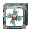

完整护框内嵌底部凹舱，固定壳体不动，叶轮按真实节点状态转动。
只用active快照决定叶轮转动，不能从总电量或整机enabled推断。角度=age×0.7弧度；ghost始终为0。本页不模拟电源原子扣费、真实时钟或推力。
前半剖开只切主体，风扇始终完整；关闭剖开或选择「底部 · 完整仰视」检查实际外形。
绿色虚线为原碰撞盒；浅色为叶轮，绿色为护框，铜色为两件固定接点座。切换剖面位置可查看根部与槽顶接触。

只修订底部显示装配，完整护框、叶片、轮毂和接点保持原尺寸；原轴心随整件同步平移。两件固定短座连接铜接点与凹舱顶，不参与旋转。
叶轮仍绕原局部+Z轴旋转，底部朝下排风、向上推力。幽灵预览保持停转，不新增挡位、风口控制或收纳机构。
本包待审阅；主体变体、底部显示偏移与匹配安装预览尚未接入游戏，实际地形、组合、骑乘和原规则仍须后续实机核对。
Blender 可编辑工程 · Blockbench 风扇与固定座 · 凹槽主体源稿 · 结构说明 · 几何验证
结构方案待用户审阅。原纹理、节点、碰撞与推进规则保持；页面不是实机物理模拟。